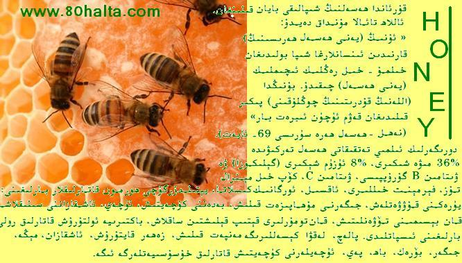

ئالدىنقى يازما
ئالدىنقى يازما كېيىنكى يازما
كېيىنكى يازما
قۇرئان ۋە تېبابەت
ئاپتور:Birzat ۋاقتى:2010-07-01



سوئال:
بىر دەرستە تىببىي مۇتەخەسسىسلەردىن كۆپلىگەن دورا - دەرمەكلەرنىڭ قۇرئان كەرىمنىڭ ئايەتلىرىگە ئاساسلىنىپ كەشىپ قىلىنغانلىقىنى ئاڭلىدىم. سۇئالىم شۇكى، ھازىر قولىمىزدا بولغانلىرى قۇرئاندا بايان قىلىنغان تىبابەتچىلىككە مۇناسىۋەتلىك بولغانلارنىڭ ھەممىسىمۇ ياكى قۇرئاندا يەنە بۇنىڭدىن ئارتۇق بىزگە پايدىلىق بولغانلىرى بارمۇ؟ مېنىڭ بىر دوستۇم قۇرئاندا ھالاك قىلغۇچى كېسەللەرنى ساقايتىشقا مۇناسىۋەتلىك تېخى بىز بىلىپ يېتەلمىگەن ئىلىملەرمۇ بارمۇ دەپ سورىغان ئىدى. شۇ سەۋەبتىن بۇ سوئالنى سورىدىم.
جاۋاب:
1- ئاللاھ تائالا مۇھەممەد ئەلەيھىسسالامنى ھاياتلىقنىڭ ھەممە تەرىپىنى ئۆز ئىچىگە ئالغان بىر مۇقەددەس دىن بىلەن ئەۋەتتى. خۇددى ئەبۇ زەر ئېيتقاندەك:« پەيغەمبەر ئەلەيھىسسالام بىزگە ئاسماندا ئۇچقان بىر ئۇچارلىقنىڭ قاناتلىرىنى مىدىرلاتقىنىغا چاغلىق ئىلىمدىنمۇ بىزنى خەۋەردار قىلغان». ( ئەھمەد رىۋايىتى 20399).
ئىسلام دىنى كىشىلەرنىڭ پۈتۈن ئېھتىياجلىرىنى ھەل قىلىش ئۈچۈن كەلگەن.
2- ھەدىسلاردا كەلگەنلىرى قۇرئاندا كەلگەنلىرىنى تولۇقلىغۇچىدۇر. بۇ ئىككى مەنبە مۇسۇلمانلار ئۈچۈن ئەڭ ئاساسلىق مەنبەلەردۇر. پەيغەمبەر ئەلەيھىسسالام ئاللاھ تائالانىڭ ھەر قانداق بىر كېسەلگە ئۇنىڭ شىپاسىنىمۇ ياراتقانلىقىنى بىزگە ئۆگەتكەن. پەيغەمبەر ئەلەيھىسسالام:« ئاللاھ قانداقلا بىر كېسەلنى چۈشۈرگەن بولسا ئۇنىڭ داۋاسىنىمۇ چۈشۈرگەن»دەپ كۆرسەتكەن. (بۇخارىي رىۋايىتى 5678)
3- سورىغۇچىنىڭ بەزى مۇسۇلمانلاردىن كۆپلىگەن داۋالارنىڭ قۇرئان ئارقىلىق كەشىپ قىلىنغانلىقى سۆزلىگەنلىكىگە كەلسەك، بۇ مۇبالىغە قىلىنغان ئىش. بەزى مۇسۇلمانلار غەربلىكلەر ئالدىدا ئاشۇرۇپ دەۋا قىلغاندەك، قۇرئان كەرىم تىبابەت كىتابى ئەمەس، جۇغراپىيە ياكى بىيولوگىيە كىتابىمۇ ئەمەس، بەلكى ئۇھىدايەت كىتابىدۇر. ئۇنىڭ ئەڭ چوڭ مۆجىزىلىرىدىن بىرى ئۇنىڭ مەنىلىرىنى كۈچى ۋە ئىستىلىستىكىلىق خۇسۇسىيەتلىرىدۇر. قۇرئاننىڭ مۆجىزىلىكىدىكى ئاساس ئەنە مۇشۇدۇر. ئاللاھ قۇرئاننى ئەرەبلەر ئەدەبىيات ۋە پاساھەتتە ئۇچىغا چىققان بىر زاماندا ئۇلارنى يېڭىش ۋە ئۆزلىرىنىڭ ئاجىزلىقىنى ھېس قىلدۇرۇش ۋە ئۇنىڭ ئاللاھ تەرىپىدىن كەلگەنلىكىنى بايان قىلىش ئۈچۈن مۇھەممەد ئەلەيھىسسالامغا چۈشۈرگەن. بۇ ئەجەبلىنەرلىك ئەمەس. مۇسا ئەلەيھىسسالامنىڭ مۆجىزىسى سېھىرلىك ھاسا بولغان. چۈنكى شۇ زامانلاردا سېھىرگەرلىك ئەۋجگە چىققان ئىدى. ئىسا ئەلەيھىسسالامنىڭ مۆجىزىلىرى ئۆلۈكلەرنى تىرىلدۈرۈش، ئاق كېسەلنى ساقايتىش ۋە تۇغما كورنى داۋالاش بولغان ئىدى. چۈنكى شۇ زامانلاردا تىبابەت ئىلمى ئەۋجگە چىققان. شۇڭا دەيمىزكى، قۇرئاننىڭ ئەڭ چوڭ مۆجىزىسى ئۇنىڭ پاساھىتى ۋە ئىستىلىستىكىلىق خۇسۇسىيەتلىرىدۇر. ئىسلام ئۆلىمالىرى تا ھازىرغىچە ئۇلارنى قۇرئان ھەققىدە تەپەككۇر قىلىش ۋە چۈشىنىشكە چاقىرىپ كەلمەكتە. بۇ دېگەنلىك قۇرئاندا يۇقىرىقىلاردىن باشقىسى يوق دېگەنلىك ئەمەس، ئەلۋەتتە. بەلكى ئاللاھ ئۇنىڭدا بەزى ئالامەتلەرنى بايان قىلغان. مەسىلەن: ئىنسان جىسمىنىڭ تەركىبلىنىشى، ئانا قورسىقىدىكى بۇۋاقنىڭ تارىلىش باسقۇچلىرى، بەزى تەبىئەت ئىلىملىرى ۋە باشقىلار.
ئەمما مەزكۇر سورىغۇچى بايان قىلغان داۋا مەسىلىسىگە كەلسەك، قۇرئان كەرىم قەلبلەرگە داۋادۇر. مۆمىنلەرگە شىپادۇر. بۇ قەلب ۋە بەدەن ھەممىسىنى ئۆز ئىچىگە ئالىدۇ. ئاللاھ قۇرئاندا ھەسەلنى زىكىر قىلىپ ئۇنىڭ كىشىلەرگە شىپالىقىنى بايان قىلغان. تەن ساقلىقنى ساقلاش ئۇسۇللىرىنى بايان قىلغان. قۇرئان كەرىم كۆپلىگەن داۋالارنى بايان قىلغان دېگەندىن بۇ مەنىنى مەقسەت قىلغان كىشى توغرا ئېيتقان بولىدۇ. ئەمما باشقىچە ئېيتىش خاتادۇر. بەلكى ئۇ بەزى مۇسۇلمانلارنىڭ مۇبالىغىسى. قۇرئان تىبابەت كىتابى ئەمەس. ھازىرقى زاماندا بۇرۇندا بولمىغان كېسەللىكلەر پەيدا بولدى. سورىغۇچىنىڭ سۆزىگە كۆرە كەلمىگەن كېسەلنىڭ داۋاسى قانداقمۇ ئۇنىڭدىن بۇرۇن كەلسۇن؟
4- قۇرئاننىڭ شىپا ئىكەنلىكىگە دالالەت قىلىدىغان ئايەتلەر:
1. « بىز مۆمىنلەرگە (يەنى ئۇلارنىڭ دىللىرىغا) شىپا ۋە رەھمەت بولىدىغان قۇرئان ئايەتلىرىنى چۈشۈرىمىز» (ئىسرا سۈرىسى 72- ئايەت).
ئىبنى قەييىم مۇنداق دېگەن: « ئاللاھنىڭ بىز مۆمىنلەرگە (يەنى ئۇلارنىڭ دىللىرىغا) شىپا ۋە رەھمەت بولىدىغان قۇرئان ئايەتلىرىنى چۈشۈرىمىز دېگەن سۆزىدىكى « من»يەنى (دىن) سۆزى بەزىسى دېگەننى بىلدۈرمەيدۇ، بەلكى ئۇ شىپانىڭ جىنسىنى بايان قىلىدۇ. ئاللاھ يەنە بىر ئايەتتە:« ئى ئىنسانلار سىلەرگە پەرۋەردىگارىڭلار تەرىپىدىن قەلبلەرگە شىپا بولىدىغان ۋەز - نەسىھەتلەر كەلدى» دېگەن.
قۇرئان كەرىمنىڭ ھەممىسى شىپادۇر. ئۇ روھىي ۋە جىسمانىي پۈتۈن كېسەللىكلەر ۋە دۇنيا ئاخىرەتلىك ئاغرىقلار ئۈچۈن كامىل بىر شىپادۇر. ئەمما ھەركىم قۇرئاننىڭ شىپاسىغا لايىق بولالمايدۇ. كېسەل بولغۇچى قۇرئاننىڭ داۋاسىنى ۋايىغا يەتكەن ئىخلاس، چىن ئىمان بىلەن قىلىپ ئۇنى يولىدا قوللانسا ۋە شەرتلىرىنى تولۇق ئادا قىلسا ئۇنىڭ شىپاسىنى چوقۇم كۆرەلەيدۇ ۋە ئۇنى ھېچقانداق كېسەل يېڭەلمەيدۇ. ئاسمان ۋە زېمىننىڭ ئىگىسى بولغان ئاللاھنىڭ ئەگەر تاغلارغا چۈشۈرسە تاغلار تاقەت قىلالمىغانلىقتىن پارچە - پارچە بولۇپ كېتىدىغان بۇ ئۇلۇغ كالامىغا نېمە تەڭ كېلەلىسۇن؟ ھەر قانداق روھىي ۋە جىسمانى كېسەللىكلەرنىڭ داۋاسى ئۈچۈن قۇرئان كەرىمدە ئەلۋەتتە ئىشارەتلەر بار. ئاللاھنىڭ كىتابىنى چۈشىنىشكە نەسىب بولغان كىشىلەر ئۈچۈن ئۇنىڭدا كېسەلدىن ساقىيىش، ساقلىنىش ئۇسۇللىرى باردۇر.(زادۇل مىئاد 4/352- بەت)
2- قۇرئان كەرىمدە روھ ۋە نەپسلەر ئۈچۈن داۋالار بار. كىمكى ئۇنى يولىدا قوللىنالىسا ئۇنىڭ جىسمانىي كېسەللىكلىرىنىڭ شىپا تېپىشىغا ۋەسىلە بولىدۇ. قۇرئان بۇ مەنىدىن ئېيتقاندا، كۆپلىگەن كېسەللىكلەر ئۈچۈن شىپا ۋە داۋادۇر.
ئىبنى قەييىم مۇنداق دېگەن: بىز ۋە باشقىلار كۆپ ئىشلارنى تەجرىبە قىلدۇقكى، ماددىي دورىلار ساقايتالمىغان كېسەللىكلەرنى ئۇلار بىلەن ساقايتقانلىقىنى كۆردۇق. سەۋەبلەر ھەرخىل بولىدۇ. قەلب قاچانىكى ئالەملەرنىڭ پەرۋەردىگارى، كېسەللىك بىلەن دورىسىنى ياراتقان زاتقا تۇتىشىدىكەن، ئۇنىڭدىن يۈز ئۆرۈگەن قەلبلەرگە تەسىر قىلمىغان داۋالار ئۇ قەلبكە شىپا بولىدۇ. (زادۇل مىئاد4/12-بەت)
3- قۇرئان كەرىمدىكى فاتىھە سۈرىسى كېسەللەر ئۈچۈن شىپادۇر. ئةبۇ سەيدتىن رىۋايەت قىلىنىدۇكى، پەيغەمبەر ئەلەيھىسسالامنىڭ ساھابىلىرىدىن بىر قانچە نەپەر كىشى ئەرەبلەرنىڭ ۋادىسىدىن بىر ۋادىغا بېرىپ ئۇلارنىڭ ئۆزلىرىنى مېھمان قىلىشىنى تەلەب قىلغىنىدا، ئۇلار مېھمان قىلىشنى رەت قىلىدۇ. شۇ مەھەللىنىڭ كاتتىسىنى يىلان چىقىۋالغان بولۇپ، ئۇنى ساقايتىش ئۈچۈن ھەممە ئىشنى قىلىپ كۆرگەن بولسىمۇ ساقايمايدۇ. مەھەللە خەلقىنىڭ بەزىسى شۇ ئادەملەرنىڭ يېنىغا بېرىپ سوراپ باقساق بەلكى ئۇلاردا شىپا بولۇپ قالسا ئەجەپ ئەمەس دەيدۇ، ۋە ساھابىلارغا كېلىپ: ئى زاھىدلار! بىزنىڭ كاتتىمىزنى يىلان چىقىۋالغانتى، پۈتۈن چارىلەرنى قىلساقمۇ ساقايمىدى. سىلەردە داۋاسى بارمىدۇ؟ دەپ سورايدۇ. ساھابىلاردىن بەزىسى: ھەئە مەن ئوقۇپ ساقايتىمەن. ئەمما بىز سىلەرنى مېھمان قىلغانتۇق، سىلەر بىزنى مېھمان قىلىشنى رەت قىلدىڭلار. سىلەر بىزگە بىر نەرسە بەرمىگىچە مەن ئوقۇمايمەن دېدى. شۇنىڭ بىلەن بىر يۈرۈش قوي بېرىش بەدىلىگە ئوقۇپ ساقايتىش قويۇشقا كېلىشىدۇ. ئاندىن بېرىپ سۈرە فاتىھەنى ئوقۇپ سۈپلەپ قويغاندىن كېيىن، ھېلىقى ئادەم ساقىيىپ مېڭىشقا باشلايدۇ. شۇنىڭ بىلەن ئۇلار كېلىشكەن ماللارنى بېرىدۇ. ساھابىلاردىن بەزىلەر قويلارنى بۆلۈشۈش تەكلىبىنى بېرىدۇ. ئەمما ئوقۇپ ساقايتقان كىشى پەيغەمبەر ئەلەيھىسسالامنىڭ يېنىغا بېرىپ، ئۇنىڭ كۆرسەتمىسى بويىچە قىلىش تەكلىبىنى بېرىدۇ. ئاخىرى ساھابىلار پەيغەمبەر ئەلەيھىسسالامغا كېلىپ ئەھۋالنى بايان قىلىدۇ. پەيغەمبەر ئەلەيھىسسالام فاتىھەنى ئوقۇغان ھېلىقى ساھابىغا « ئۇنىڭ رۇقى(يەنى شىپالىق)ئىكەنلىكىنى نەدىن بىلدىڭ؟ توغرا قىلدىڭلار. بولدى بۆلۈشۈڭلار. ئۇنىڭدىن ماڭىمۇ بىر كىشىلىك نېسىۋە ئايرىپ قويارسىلەر»دېدى ۋە كۈلۈپ كەتتى. (بۇخارىي ۋە مۇسلىم رىۋايىتى).
ئىبنى قەييىم فاتىھە سۈ رىسى ھەققىدە مۇنداق دېگەن:« ئاللاھ تەۋفىق بېرىپ، ئۇنىڭغا ھەقىقەتلەرنى كۆرۈش كۆزىنى بەرگەن كىشى سۈرە فاتىھەنىڭ خاسىيەتلىرىنى ئەلۋەتتە چۈشىنىدۇ. بۇ سۈرىنىڭ تەۋھىد، ئاللاھنى تونۇش ۋە ئۇنىڭ سۈپەتلىرىنى بىلىش قاتارلىق ئەسرارلىرىغا يېتىدۇ. بۇ سۈرە ئاللاھنىڭ بارلىقىنى، بىرلىكىنى، ئىسىم - سۈپەتلىرىنى، خاھىشلىرىنى، شەرىئەتنى، قازا ۋە قەدەرنى، ئاخىرەت ھاياتىنى، ئاللاھقا خالىس ئېتىقاد قىلىشنى، ئۇنىڭغا يۆلىنىش، ھىدايەتنى ئۇنىڭدىنلا تىلەشنى، يامانلىقلاردىن ساقلىنىشنى، ئىككى دۇنيالىق سائادەتنىڭ يولىنى ۋە ئىشلارنى ئۇنىڭغا تاپشۇرۇشنى مەزمۇنلۇق ھەم ئىخچام ھالدا بايان قىلغان ئۇلۇغ سۈرىدۇر. بۇ سەۋەبتىن فاتىھە سۈرىسىنىڭ شىپاسى كۆپلىگەن ماددىي دورىلاردىن بىھاجەت قىلىشقا يېتەرلىكتۇر».(زادۇل مەئاد 4/347-بەت).
4- قۇرئاندا ساقلىقنى ساقلاش ئۇسۇللىرى بايان قىلىنغان
ئىبنى قەييىم مۇنداق دېگەن:« تىبابەت ئۇسۇلى ئۈچ بولۇپ، ئۇلار: ساقلىنىش، ساقلىقنى ساقلاش ۋە زىيانلىق خىلىتلارنى چىقىرىپ تاشلاشتۇر. ئاللاھ قۇرئان كەرىمدە ئۈچ ئورۇندا بۇنى مۇھەممەد ئەلەيھىسسالامنىڭ ئۇممىتىگە ئۆگەتكەن: كېسەلگە زىيان يېتىشنىڭ ئالدىنى ئېلىش ئۈچۈن سۇ ئىشلىتىشتىن ساقلىنىشنى ئۆگەتكەن.« ئەگەر كېسەل (يەنى كېسەلگە سۇ زىيان قىلىدىغان بولسا) ياكى سەپەر ئۈستىدە بولساڭلار، ياكى ھاجەت قىلساڭلار، ياكى ئاياللار بىلەن مۇناسىۋەت ئۆتكۈزسەڭلار، (مۇشۇنداق ئەھۋال ئاستىدا) سۇ تاپالمىساڭلار، پاك تۇپراقنى يۈزۇڭلارغا ، قولۇڭلارغا سۈرتۈپ تەيەممۇم قىلىڭلار، اﷲ ھەقىقەتەن ئەپۇ قىلغۇچىدۇر، مەغپىرەت قىلغۇچىدۇر (يەنى اﷲ بەندىلىرىگە ھەرەج بولماسلىقى ئۈچۈن، ئىبادەتنى ئاسانلاشتۇرۇپ بەرگۈچىدۇر)» (نىسا سۈرىسى 43- ئايەت). كېسەلنى سۇنىڭ زىيىنىدىن ساقلاش ئۈچۈن ئۇنىڭ تاھارەت ئېلىش بەدىلىگە تەيەممۇم قىلىشىغا رۇخسەت قىلغان.
ساقلىقنى ساقلاش توغرۇلۇق مۇنداق دېگەن:« كېسەل ياكى سەپەر ئۈستىدە (يەنى مۇساپىر) بولۇپ (تۇتمىغان بولسا، تۇتمىغان كۈنلەر ئۈچۈن) باشقا كۈنلەردە تۇتسۇن. اﷲ سىلەرگە ئاسانلىقنى خالايدۇ، تەسلىكنى خالىمايدۇ»( بەقەرە 185- ئايەت). يولۇچى ئۈچۈن رامىزان كۈندۈزىدە روزا تۇتماسلىقنى رۇخسەت قىلغان. بۇ ئۇنىڭ ساقلىقىنى ساقلاش ئۈچۈن ئىدى.
ھەجدە ئىھرامدىن چىققان كىشىنىڭ بېشىنى چۈشۈرۈشى ساقلىقىغا زىيانلىق بولغاندا، ئۇنىڭ بېشىنى چۈشۈرمەستىن فىدىيە بېرىشىگە رۇخسەت قىلدى.« سىلەردىن كىمكى كېسەل (يەنى چېچنى چۈشۈرسە زىيان قىلىدىغان كېسەل) ياكى بېشىدا ئىللەت (يەنى باش ئاغرىقى، پىتقا ئوخشاشلار) بولۇپ (بېشىنى چۈشۈرمىسە)، فىدىيە قىلىش يۈزىسىدىن (ئۈچ كۈن) روزا تۇتسۇن ياكى (ئالتە مىسكىنگە ئۈچ سا) سەدىقە بەرسۇن، ياكى (بىرەر مال) قۇربانلىق قىلسۇن، ئەمىنلىكتە بولغان چېغىڭلاردا (ئاراڭلاردىن) ئۆمرە قىلغاندىن كېيىن ھەج قىلىشتىن بەھرىمەن بولغان ئادەم (يەنى ھەجدىن بۇرۇن ئۆمرە قىلىپ تاماملىغان ئادەم) نېمە ئوڭاي بولسا، شۇنى قۇربانلىق قىلسۇن» (بەقەرە 196).
بۇ ئۈچ ئىش تىبابەتنىڭ ئۇسۇلى بولۇپ، ساقلىقنى ساقلاش ئۇسۇللىرىدىنىڭ ھەر جىنستىن بىرەردىن نەرسىنى بايان قىلىش ئارقىلىق ئاللاھ بەندىلىرىگە قىلغان ئاتا - ئېھسانلىرىنى يادلاتقان. بۇ ئاللاھنىڭ شەپقىتى ئىدى. (زادۇل مەئاد 1/164-165- بەتلەر).
5- قۇرئاندا ھەسەلنىڭ شىپالىقى بايان قىلىنغان. ئاللاھ تائالا مۇنداق دەيدۇ: « ئۇنىڭ (يەنى ھەسەل ھەرىسىنىڭ) قارنىدىن ئىنسانلارغا شىپا بولىدىغان خىلمۇ - خىل رەڭلىك ئىچىملىك (يەنى ھەسەل) چىقىدۇ. بۇنىڭدا (اللەنىڭ قۇدرىتىنىڭ چوڭلۇقىنى) پىكىر قىلىدىغان قەۋم ئۈچۈن ئىبرەت بار» (نەھل -ھەسەل ھەرە سۈرىسى 69- ئايەت).
ئىبنى قەييىم مۇنداق دېگەن: « ھەسەلنى سۇغاق سۇغا ئارىلاشتۇرۇپ ئىچىش ئارقىلىق ساقلىقنى ساقلىغىلى بولىدۇ. بۇ ھەقىقەتنى پەقەت كاتتا تېۋىپلارلا بىلىدۇ. ھەسەلنى ئىچىش ۋە ئاغزىدا توختىتىپ ئۆتكۈزۈش بەلغەمنى يوق قىلىدۇ. ئاشقازاننى تازىلايدۇ ۋە غەيرى نورمال خىلىتلارنى چىقىرىپ تاشلايدۇ. ھەسەل جىگەرگە، بۆرەككە ۋە سۈيدۈك خالتىسىغا پايدىلىقتۇر. ئۇ ئاشقازانغا كىرگەن تاتلىق نەرسىلەرنىڭ ئەڭ پايدىلىقىدۇر. ئۇ پەقەت سەپىرا كېسىلى بار ئادەمگىلا زىيانلىق دەپ قارىلىدۇ. ئۇنىڭ سەپراسىنى ئاچچىقسۇ بىلەن ھەل قىلغىلى بولىدۇ. بۇ ۋاقىتتا ئۇ ھەسەل زىيان قىلمايدۇ. بەلكى كۆپ پايدىلىق بولىدۇ.
ھەسەلنىڭ پايدىلىرى ئىنتايىن كۆپ بولۇپ، ئۇ ئۈچەي ۋە تومۇرلاردىكى كىرلارنى تازىلايدۇ. بەلغەملىك كىشىلەرگە بەك پايدىلىقتۇر. سۈيدۈكنى ياخشىلايدۇ، جىگەرنى جانلاندۇرىدۇ، يۈرەكنى ياخشىلايدۇ. ھەسەلنى سۇ بىلەن ئارىلاشتۇرۇپ ئىچىپ بەرسە ئىت چىشلىۋالغان جايغا پايدا قىلىدۇ. چۈنكى ئۇ زەھەرنى تارتىدۇ. دېمەك، ھەسەل ئەڭ ئېسىل تاماق، ئەڭ ئېسىل شاراب ۋە ئەڭ پايدىلىق دورىدۇر.
تەرجىمىدە: مۇھەممەد يۇسۇپ
مەنبە: ئىسلام ئائىلىسى تورى : http://www.islamhouse.com
دورىگەرلىك ئىلمىي تەتقىقاتى ھەسەل تەركىۋىدە %36 مىۋە شىكىرى، %8 ئۈزۈم شېكىرى (گېلىكوزا) ۋە ۋىتامىن B گۇرۇپپىسى، ۋىتامىن C، كۆپ خىل مېنرال تۇز، فېرمېنت خىللىرى، ئاقسىل، ئورگانىك كىسلاتا، يېتىلدۇرگۇچى ھورمون قاتارلىقلار بارلىغىنى؛ يۈرەكنى قۇۋۋەتلەش، جىگەرنى مۇھاپىزەت قىلىش، بەدەننى كۇچەيتىش، ئۈچەي، ئاشقازاننى سىلىقلاشتۇرۇش، قان بېسىمىنى تۆۋەنلىتىش، قان تومۇرلىرى قېتىپ قېلىشتىن ساقلاش، باكتىرىيە ئولتۇرۇش قاتارلىق رولى بارلىغىنى ئىسپاتلىدى.
ﺑﻪﻟﻐﻪﻣﻨﻰ ﺑﻮﺷﯩﺘﯩﺶ، ﺗﻮﺳﺎﻟﻐﯘﻻﺭﻧﻰ ﺋﯧﭽﯩﺶ، ﺋﯩﺴﺘﯩﻘﺎ، ﺳﯧﺮﯨﻘﻠﯩﻖ ﭼﯘﺷﯘﺵ، ﭘﺎﻟﻪﭺ، ﻟﻪﻗﯟﺍ ﻛﯧﺴﻪﻟﻠﯩﺮﯨﮕﻪ ﻣﻪﻧﭙﻪﺕ ﻗﯩﻠﯩﺶ، ﺯﻩﻫﻪﺭ ﻗﺎﻳﺘﯘﺭﯗﺵ، ﺋﺎﺷﻘﺎﺯﺍﻥ، ﻳﯜﺭﻩﻙ، ﻣﯧﯖﻪ، ﺟﯩﮕﻪﺭ، ﺑﯚﺭﻩﻙ، ﺑﺎﻫ، ﭘﻪﻱ، ﺋﯜﭼﻪﻳﻠﻪﺭﻧﻰ ﻛﯜﭼﻪﻳﺘﯩﺶ ﺑﺎﺵ ﺋﺎﻏﺮﯨﻘﯩﻐﺎ ﻣﻪﻧﭙﻪﺕ ﻗﯩﻠﯩﺶ، ﻣﯩﻜﺮﻭﺏ ﺋﯚﻟﺘﯘﺭﯗﺵ ﻗﺎﺗﺎﺭﻟﯩﻖ ﺧﯘﺳﯘﺳﯩﻴﻪﺗﻠﻪﺭﮔﻪ ﺋﯩﮕﻪ.

 يازما مەنبەسى: بېكەت ئەسىرى
يازما مەنبەسى: بېكەت ئەسىرى خەتكۈش: قۇرئان ۋە تېبابەت ، ھەسەل
خەتكۈش: قۇرئان ۋە تېبابەت ، ھەسەل  مۇناسىۋەتلىك يازمىلار:
مۇناسىۋەتلىك يازمىلار:
ئىنكاس: 6 | نەقىل: 0 | كۆرۈلگىنى: -
 قايتۇرما
قايتۇرما
مېنىڭ ئۆپكەمدە ئۆسمە بۇلۇپ 2 قېتىم ئوپىراتسىيە قىلدۇرغان بولساممۇ يەنە پەيدا بولدى ھازىر 2 -دو ختۇرىانىدا خىمىيەلىك داۋالاش قىلىۋاتىدۇ . لېكىن ئۈنۈمى تازا ياخشى ئەمەس مەسلھەت بېرلسە!46 ياش چ چ نۇمۇرۇم 1552468749
 Birzat نىڭ دە قالدۇرغان جاۋابى
Birzat نىڭ دە قالدۇرغان جاۋابى
بۇ ئاساسلىقى35 - 40 ياشتىن ئاشقانلاردا كۆرىلىدىغان كېسەللىك بولۇپ ئۇزۇن مەزگىل تاماكا چىكىش، ئۆپكىدىكى ھەر خىل سوزۇلما كېسەللىكلەرنىڭ تەسىرى ياكى راك ھۈجەيرىلىرىنىڭ ئۆپكىگە تەسىر قىلىشى نەتىجىسىدە كاناي شاخچىلىرى ۋە ئۆپكە ئەتراپىدا پەيدا بولىدىغان بىر خىل ئۆسمە كېسەللىكى بولۇپ قېقىلىپ يۆتىلىش، ھاسىراش، قارامتۇل ياكى جىگەر رەڭ قان تۈكۈرۈش، ئۇزۇنغا سوزۇلغان تۆۋەن قىزىتما، كەم قانلىق، ماغدۇرسىزلىنىش، ئورۇقلاش، كۆكرەك ساھەسى ئاغرىش قاتارلىق ئالامەتلەر بىلەن ئىپادىلىنىدۇ. ئەگەر ئۆسمىنىڭ تارقىلىشى دائىرىسى كەڭرى، تېز بولسا ئوپراتسىيە قىلىش زۆرۈر. بۇ ھەقتە <<جاھىل خاراكتېرلىك كېسەللىكلەرنى داۋالاش>> نىڭ مۇئەللىپى - مەرھۇم ئۆمەرجان ئىسمائىل شۇنداق دەپتۇ: ئوپراتسىيە قىلىش ئۈنۈملۈك داۋالاش ئۇسۇلىدۇر، لىكىن ئورۇن يۆتكەلگەن، ئەتىراپقا تارىغان بولسا بۇمۇ خەتەرلىك. ئوپراتسىيە قىلىش، نۇر بىلەن يانداشتۇرۇپ داۋالاش، يەنە خىمىيەلىك دورا، تېبابەت دورىلىرى بىلەن بىرلەشتۈرۈپ داۋالاشنى بىللە ئىلىپ بىرىش موھىم. شۇنداقتىمۇ تۆۋەندىكى رېتسىپ ۋە تەرتىپ بويىچە داۋالاش بىر قەدەر ئۈنۈملۈك.
1.مۇرەككەپ سەرتان مەجۈنى
تەركىبى: ئۇچقۇر پاقا 120 گىرام، ئاق يەر يىلان 80 گىرام، ئوق يىلان 30 گىرام، قورۇلغان چايان 30گىرام، كابۇل ھېلىلە پوستى، سېرىق ھېلىلە پوستى، قارا ھېلىلە 30گىرامدىن، مۇدەببەر قىلىنغان كۇچۇلا 20گىرام، ئاقىرقەرھا، كۇندۇر، قورۇلغان ئادراسمان ئۇرۇقى، چۈچۈكبۇيا يېلتىزى، بادام مېغىزى، كاۋاۋىچىن، توم زەنجىۋىل، ئەپيۇن ئۇرۇقى، ئاق ئۈجمە يېلتىزىنىڭ تازىلانغان پوستى، سارغايتىپ قاسرىقى ئېلىۋېتىلگەن ئاچچىق ئۆرۈك مېغىزى، سارغايتىلغان تۇخۇم شاكىلى40گىرامدىن؛ مەرۋايىت، ئادەمگىياھ 30گىرامدىن؛ بۇغا مۈڭگۈز كۈشتىسى 50گىرام، پاكىز چاچ كۈلى، كۆيدۈرۈلگەن پىلە، سارغايتىلغان كىرپە تىكىنى، ئاقاقىيا، كان ھىندى، كەتىرا 30 گىرامدىن؛ تولۇق ئۆلتۈرۈلگەن (زەھەرسىزلەندۈرۈلگەن) سىماب 25 گىرام، زەھەرسىز ئامىلە 20گىرام، ھاڭگا تېرەك ئۇرۇقى(قوۋزىقى بولسىمۇ بولىدۇ) 30گىرام، پىننە، يالپۇز، بىخ مارجان كۈشتىسى30گىرامدىن؛ سەمىغى ئەرەبى 20گىرام، ئىپار 4 گىرام، يېتەرلىك مىقداردا ھەسەل جەۋھىرى ئىچىپ بىرىش كېرەك. ئۇندىن باشقا ئەھۋالغا قاراپ ماغدۇرلاندۇرۇش شەربىتى تەييارلاپ ئىچىش لازىم.
رېتسىپ:
بۇ ھەقتىكى تېما ئايرىم تېما سۈپىتىدە باش بەتتە ئىلان قىلىنىدۇ، تەپسىلاتنى باش بەتتىن كۆرىۋىلىڭ!
1.مۇرەككەپ سەرتان مەجۈنى
تەركىبى: ئۇچقۇر پاقا 120 گىرام، ئاق يەر يىلان 80 گىرام، ئوق يىلان 30 گىرام، قورۇلغان چايان 30گىرام، كابۇل ھېلىلە پوستى، سېرىق ھېلىلە پوستى، قارا ھېلىلە 30گىرامدىن، مۇدەببەر قىلىنغان كۇچۇلا 20گىرام، ئاقىرقەرھا، كۇندۇر، قورۇلغان ئادراسمان ئۇرۇقى، چۈچۈكبۇيا يېلتىزى، بادام مېغىزى، كاۋاۋىچىن، توم زەنجىۋىل، ئەپيۇن ئۇرۇقى، ئاق ئۈجمە يېلتىزىنىڭ تازىلانغان پوستى، سارغايتىپ قاسرىقى ئېلىۋېتىلگەن ئاچچىق ئۆرۈك مېغىزى، سارغايتىلغان تۇخۇم شاكىلى40گىرامدىن؛ مەرۋايىت، ئادەمگىياھ 30گىرامدىن؛ بۇغا مۈڭگۈز كۈشتىسى 50گىرام، پاكىز چاچ كۈلى، كۆيدۈرۈلگەن پىلە، سارغايتىلغان كىرپە تىكىنى، ئاقاقىيا، كان ھىندى، كەتىرا 30 گىرامدىن؛ تولۇق ئۆلتۈرۈلگەن (زەھەرسىزلەندۈرۈلگەن) سىماب 25 گىرام، زەھەرسىز ئامىلە 20گىرام، ھاڭگا تېرەك ئۇرۇقى(قوۋزىقى بولسىمۇ بولىدۇ) 30گىرام، پىننە، يالپۇز، بىخ مارجان كۈشتىسى30گىرامدىن؛ سەمىغى ئەرەبى 20گىرام، ئىپار 4 گىرام، يېتەرلىك مىقداردا ھەسەل جەۋھىرى ئىچىپ بىرىش كېرەك. ئۇندىن باشقا ئەھۋالغا قاراپ ماغدۇرلاندۇرۇش شەربىتى تەييارلاپ ئىچىش لازىم.
رېتسىپ:
بۇ ھەقتىكى تېما ئايرىم تېما سۈپىتىدە باش بەتتە ئىلان قىلىنىدۇ، تەپسىلاتنى باش بەتتىن كۆرىۋىلىڭ!
كىكەچلىك كىسىلىگە دورا بارمىدۇ،مىنىڭ كېسىلىم تۇغما ئەمەس،4ياش ۋاقتىمىدا سۇغا چۈشۈپ كىتىپ شۇنداق بولۇپ قالغان،ناخشا ئوقوسام كىكەچلىمەيمەن.
ئەسسالامۇئەلەيكۇم بىرزات ئەپەندى! مېنىڭ ئېغىزىم سېسىق پۇراش سەۋەبلىك ئىجتىمائىي ئالاقەمگە ناھايىتى زور تەسىر كۆرسىتىپ، قانداق قىلسام بولار دەپ بېشىم قېتىپ تۇرغاندا 10 كۈندەك بولدى چىشىمنى چوتكىلىسامغۇ قانايدۇ، ھەتتا ئۇخلاپ قوپۇپ ئېغىزىمنى چايقىساممۇ بىر خىل قان يۇقىنى چايقىغاندەك قىزغۇچ سېرىق چىقىدۇ، قانايدىغان چىشلىرىمنىڭ تۈۋى كۆكىرىپ قالغاندەك بولۇپ قالدى. قانداق قىلسام بولار؟ بىر مەسلىھەت بەرگەن بولسىڭىز!
ئۇلۇغ ئاللاھ شىپالىق قوللىرىڭىزغا دەرت بەرمىگەي!
ئۇلۇغ ئاللاھ شىپالىق قوللىرىڭىزغا دەرت بەرمىگەي!
منىنىڭ 70 ياشتا دادا باتى . قان بىسىم دورلىرى تۇپەيلى بۆرەكە سۇ چۇپقالدى ... مۇشۇنىڭغا ۇيغۇر تىبابىتىدە
ۇنۇملۇك بىر داۋاسى بارمىدۇ ؟ بولسا بىر چۇشۇشەنچە بەرگەن بولسىڭىز .
اللە ەجىرڭىزنى بەسۇن.
رەخمەت .
ۇنۇملۇك بىر داۋاسى بارمىدۇ ؟ بولسا بىر چۇشۇشەنچە بەرگەن بولسىڭىز .
اللە ەجىرڭىزنى بەسۇن.
رەخمەت .
ئەسسالاممۇ ئەلەيكۇم، بىرزات ئەپەندى:
مېنىڭ قىزىم تۇغۇلغىنى تۆت ئاي بولاي دېدى، تۇغۇلۇشىدىنلا ئۆپكە ياللۇغى، تۇغما خاراكىرلىك يۈرەك كېسىلى، جىگەر زەخمىلەنگەن... دېگەندەك بىر قانچە خىل دېئاگنوزلار قۇيۇلغان. ھازىرغىچە تۈزۈك چوڭ بولالمىدى. تولا ئىچى سۈرۈپ قالىدۇ. قانداق قىلىپ بېقىشنى، قانداق داۋاشنى بىلەلمىدۇق... بىر مەسلىھەت كۆرسەتسىڭىز، ئاللا يولىدا شىپالىق بەرسە ئەجەپ ئەمەس.
ئاللا رەھمەت قىلغاي.
مېنىڭ قىزىم تۇغۇلغىنى تۆت ئاي بولاي دېدى، تۇغۇلۇشىدىنلا ئۆپكە ياللۇغى، تۇغما خاراكىرلىك يۈرەك كېسىلى، جىگەر زەخمىلەنگەن... دېگەندەك بىر قانچە خىل دېئاگنوزلار قۇيۇلغان. ھازىرغىچە تۈزۈك چوڭ بولالمىدى. تولا ئىچى سۈرۈپ قالىدۇ. قانداق قىلىپ بېقىشنى، قانداق داۋاشنى بىلەلمىدۇق... بىر مەسلىھەت كۆرسەتسىڭىز، ئاللا يولىدا شىپالىق بەرسە ئەجەپ ئەمەس.
ئاللا رەھمەت قىلغاي.
ئىنكاس يوللاش
ئاللاھ رەھمەت قىلسۇن